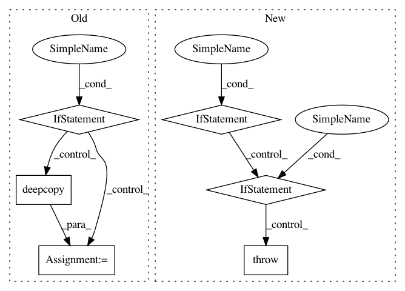

161ae41bebc73c146627169f761e3c4ddf83e5d4,pixyz/losses/losses.py,Divergence,__init__,#Divergence#Any#Any#Any#,237
Before Change
because these depend on the given distributions and each loss function.
if input_var is not None:
_input_var = deepcopy(input_var)
else:
_input_var = deepcopy(p.input_var)
if q is not None:
_input_var += deepcopy(q.input_var)
_input_var = sorted(set(_input_var), key=_input_var.index)
super().__init__(_input_var)
self.p = p
self.q = q
After Change
... def forward(self, z):
... return {"probs": torch.sigmoid(self.model(z))}
...
>>> p = Generator()
>>> q = Inference()
>>> prior = Normal(loc=torch.tensor(0.), scale=torch.tensor(1.),
... var=["z"], features_shape=[64], name="p_{prior}")
...
>>> // Define a loss function (VAE)
>>> reconst = -p.log_prob().expectation(q)
>>> kl = KullbackLeibler(q,prior)
>>> loss_cls = (reconst - kl).mean()
>>> print(loss_cls)
mean \\left(- D_{KL} \\left[q(z|x)||p_{prior}(z) \\right] - \\mathbb{E}_{q(z|x)} \\left[\\log p(x|z) \\right] \\right)
>>> // Evaluate this loss function
>>> data = torch.randn(1, 128) // Pseudo data
>>> loss = loss_cls.eval({"x": data})
In pattern: SUPERPATTERN
Frequency: 3
Non-data size: 6
Instances
Project Name: masa-su/pixyz
Commit Name: 161ae41bebc73c146627169f761e3c4ddf83e5d4
Time: 2020-10-26
Author: kaneko@weblab.t.u-tokyo.ac.jp
File Name: pixyz/losses/losses.py
Class Name: Divergence
Method Name: __init__
Project Name: facebookresearch/pythia
Commit Name: 88a836a73c0b324fc116f284759dbb9c3de22e63
Time: 2020-10-14
Author: asg@fb.com
File Name: mmf/modules/encoders.py
Class Name: ImageFeatureEncoder
Method Name: __init__
Project Name: tensorflow/models
Commit Name: e1799db4a196fc6bf50561c557d39bf1e989bf6a
Time: 2020-02-27
Author: yeqing@google.com
File Name: official/modeling/hyperparams/base_config.py
Class Name: Config
Method Name: __setattr__